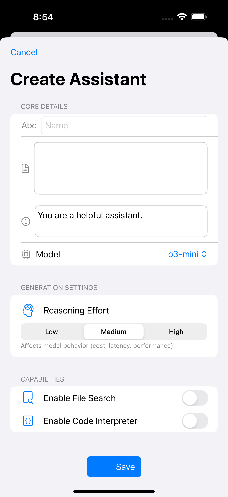

OpenAssistant
Archived native client for the OpenAI Assistants API
OpenAssistant brought assistants, threads, runs, vector stores, and mobile file preprocessing to iPhone and iPad in a native SwiftUI client. It remains useful as a record of the older Assistants API product line, but new work now happens in OpenResponses on top of the newer Responses API.
